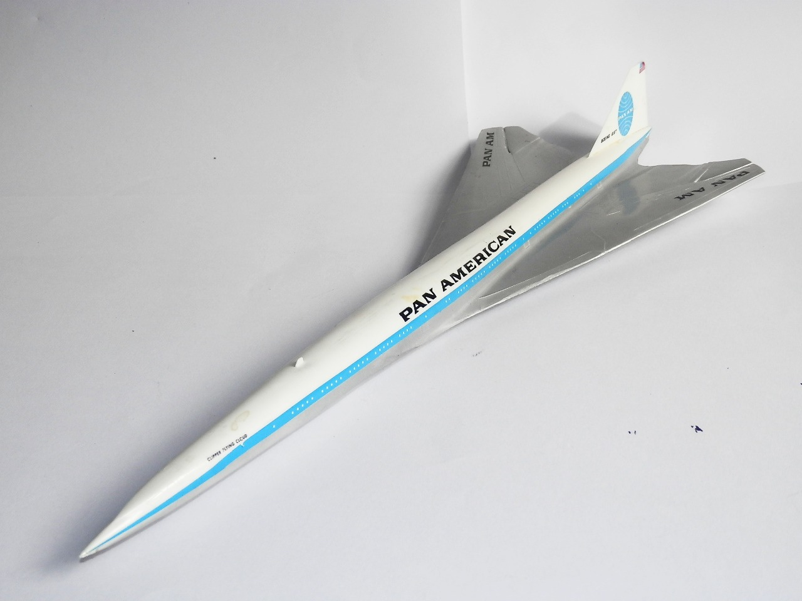
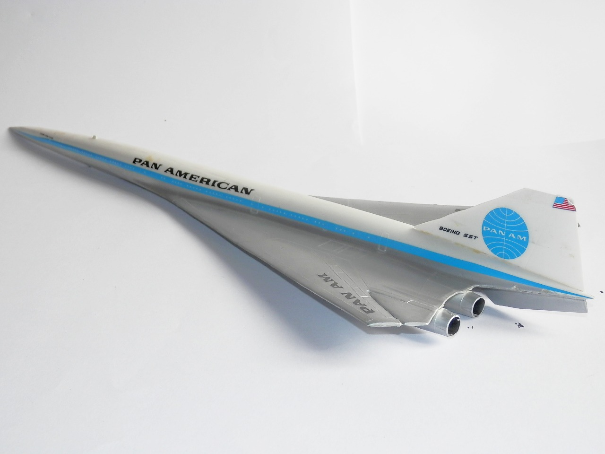
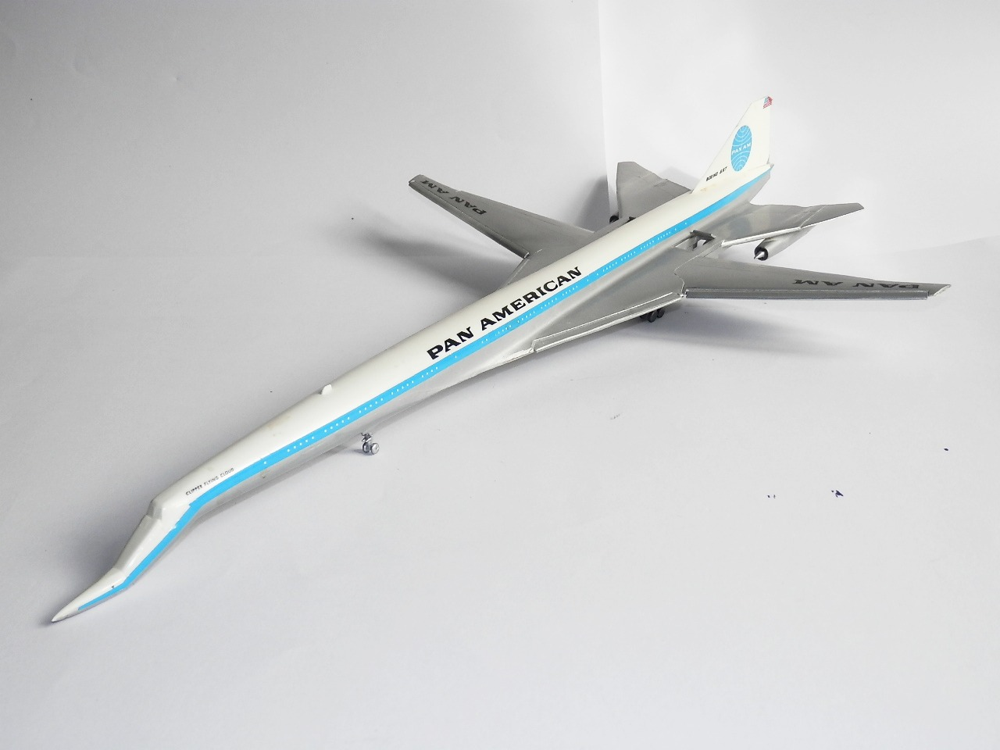
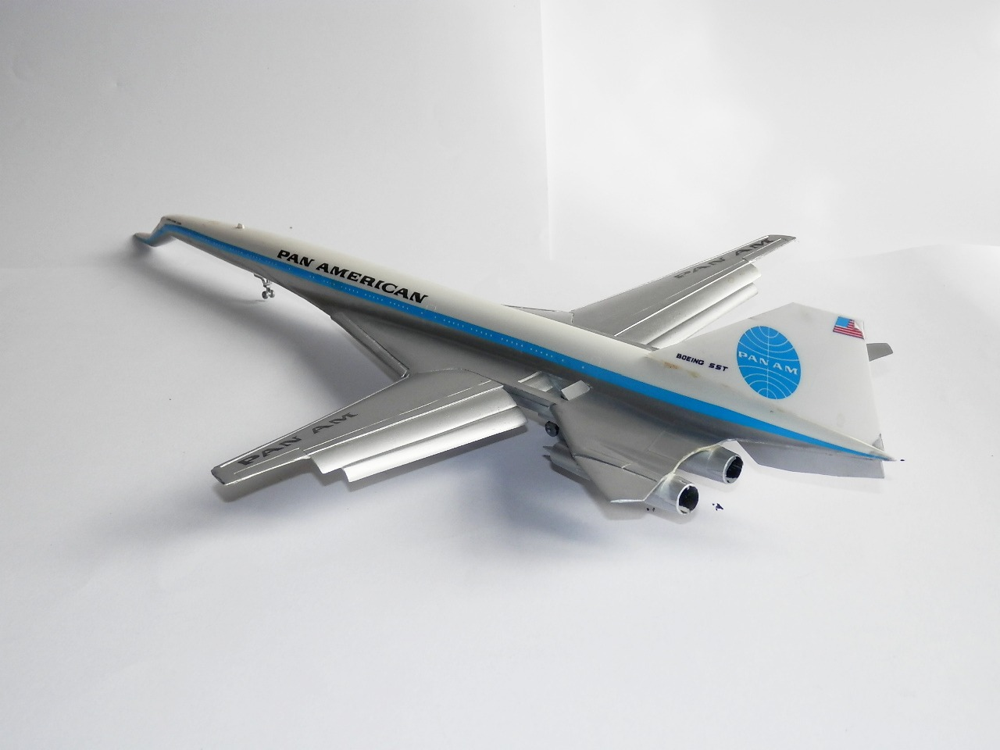

Aerei · scale model archive
Boeing SST
Boeing SST — Kit: Revell, Scale: 1/144. Great old Revell Kit containing the SST plane both in cruise and take-off/landing configuration, superb idea, The…

Photo gallery



English description
Great old Revell Kit containing the SST plane both in cruise and take-off/landing configuration, superb idea, The variable geometry wing applied to an airliner was really something.
Additionally, look with nostalgia to the old, long-gone PanAm livery which once war synonym of air travel
Descrizione italiana
Splendido vecchio kit Revell che contiene l’SST sia in configurazione di crociera sia in configurazione di decollo e atterraggio: un’idea superba. L’ala a geometria variabile applicata a un aereo di linea era davvero qualcosa di speciale.
In più, guardiamo con nostalgia alla vecchia livrea Pan Am, ormai scomparsa, che un tempo era quasi sinonimo stesso di viaggio aereo.